Last Updated: 2024-05-30
本資料の位置づけ
以下のAWS公式で提供されているハンズオン資料があります。
しかしながら、2022年に作成されたものであるため、
2024年現在の画面と大きく乖離が入っていることを受けて、
ベースはいただきつつも、2024年5月時点でのものに更新します。
https://pages.awscloud.com/JAPAN-event-OE-Hands-on-for-Beginners-monitoring-2022-reg-event.html
Amazon CloudWatchとは、Amazonが提供するクラウドサービスの監視ツールです。 このツールを使えば、AWSのリソース(コンピューター、ストレージ、ネットワークなど)の状況を簡単に監視することができます。 リソースの使用状況や、エラーの発生などを確認でき、問題に早期に対処することができます。

GUI or CUI どちらで実施しても構いません
（GUI）CloudFormationを実行
次のどちらかのURLからファイルを取得する
https://github.com/midnight480/aws-monitoring-hands-on-1/blob/master/monitoring-1.yaml
https://raw.githubusercontent.com/midnight480/aws-monitoring-hands-on-1/master/monitoring-1.yaml
東京（ap-northeast-1）でCloudformationを開く
https://ap-northeast-1.console.aws.amazon.com/cloudformation/home
Create stack（スタックの作製）を押す

Choose an existing template（既存のテンプレートを選択）
> Upload a template file（テンプレートファイルのアップロード）
> monitoring-1.yaml

（CUI）CloudFormationを実行
CloudShellを起動する
```bash
git clone https://github.com/midnight480/aws-monitoring-hands-on-1.git
cd aws-monitoring-hands-on-1/
sh monitoring-1-create-stack.sh
```
（任意）リソースの確認
実際に起動しているリソースの確認
（任意）EC2を見てみる
作成しているEC2の情報を見てみてください
https://ap-northeast-1.console.aws.amazon.com/ec2/home
（任意）RDSを見てみる
作成しているRDSの情報を見てみてください。
https://ap-northeast-1.console.aws.amazon.com/cloudwatch/home
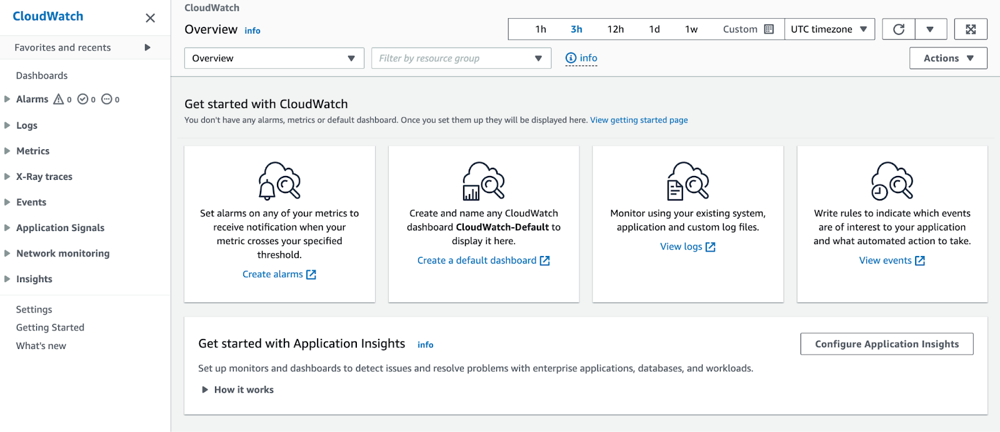
Alarm
設定したしきい値に基づいて通知をする際に利用します
Logs
EC2やRDS、Lambdaといった各サービスから連携されるログの収集先となります
Metrics
Logsで収集した結果を元にグラフで可視化する際に利用します
（任意）その他
- X-Ray traces：構築したサーバレスサービス間のIOなどボトルネックを洗い出す際に利用します
- EventsEventBridge Rulesに統合されていますが、Cron式などで所定の時間に起動させたいなどの設定する際に利用します
- Application Signals：自前のアプリケーションを外形監視したい、結合状況を可視化したいといった際に利用します
- Network monitoring：世界のインターネットで発生している障害状況を確認する際に利用しま
- Insights：LambdaやEC2などより詳細に調査する際に利用します
Cloudformationで作成されたリソースの確認
Outputs（出力）タブ
Stacks > monitoring-1
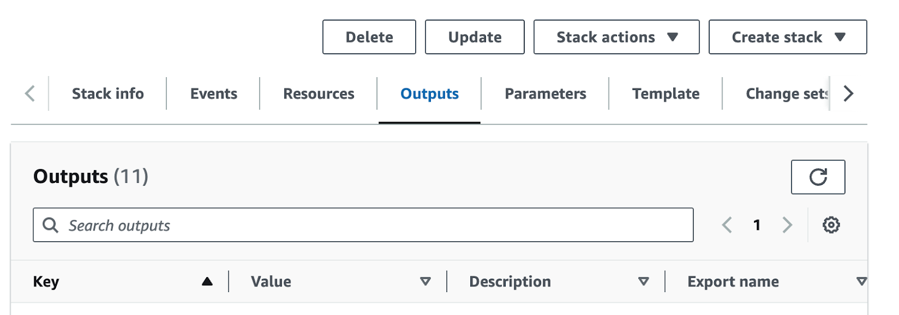
以下の4つの情報をご自身のメモアプリなどに転記してください
- EC2WebServer01：CloudWatchでLogを確認する際に識別するインスタンスIDとなります
- EC2WebServer01DNS：WordPressの初期設定を行うURLとなります
- EC2WebServer02：CloudWatchでLogを確認する際に識別するインスタンスIDとなります
- EC2WebServer02DNS：WordPressで初期設定後にアクセスするURLとなります
- RDSEndpointAddress：WordPressのデータベースに設定するURLとなります
WordPressの初期設定
EC2WebServer01DNS のURLにアクセスしてください

設定値
- データベース名： wordpress
- ユーザー名： dbmaster
- パスワード： H&ppyHands0n
- データベースのホスト名： RDSEndpointAddress のURL
- テーブル接頭辞： wp_（初期値）


設定値
- サイトのタイトル： Monitoring #1
- ユーザ名： Admin
- パスワード： 各人の表示されている文字列をコピーする
- メールアドレス： username@example.com （実際にメールは送付されません）
- 検索エンジンがサイトをインデックスしないようにする： ☑


EC2のディスク使用率が90%以上のときにアラートを発報する
Alarmにアクセス
https://ap-northeast-1.console.aws.amazon.com/cloudwatch/home?region=ap-northeast-1#alarmsV2:
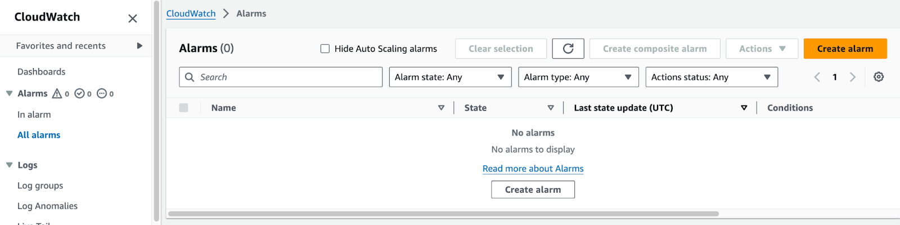
Create alarm > Select metric に進みます
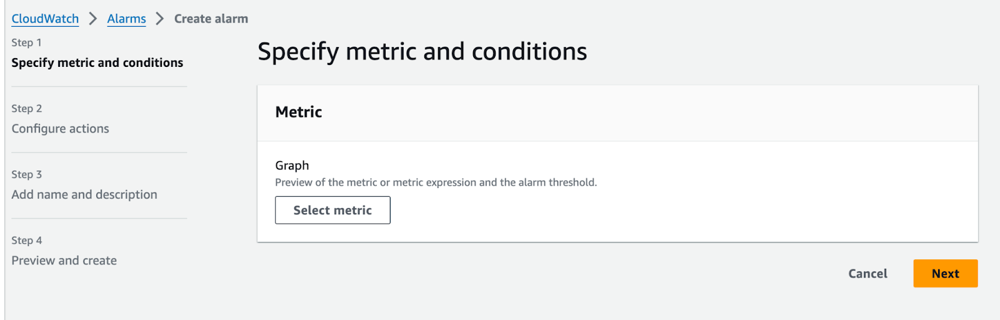
Metrics > CWAgent に進みます
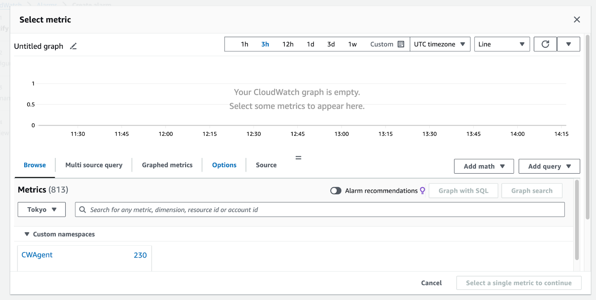
CWAgent > ImageId, InstanceId, InstanceType, device, fstype, path に進みます
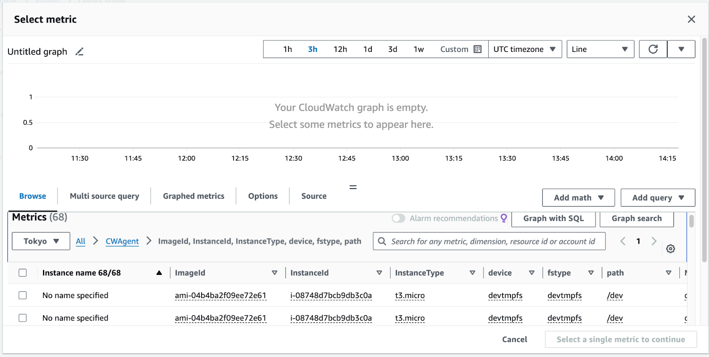
設定値
- Instance Name： monitoring-1-WebServer01
- Path： /
- Metric Name： disk_used_percent
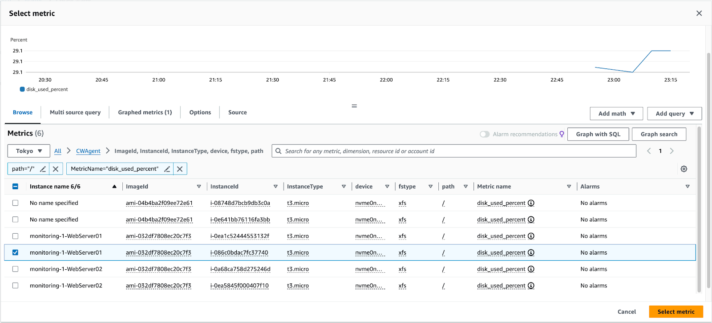
左端のチェックボックスに☑を入れて、Select metricに進みます
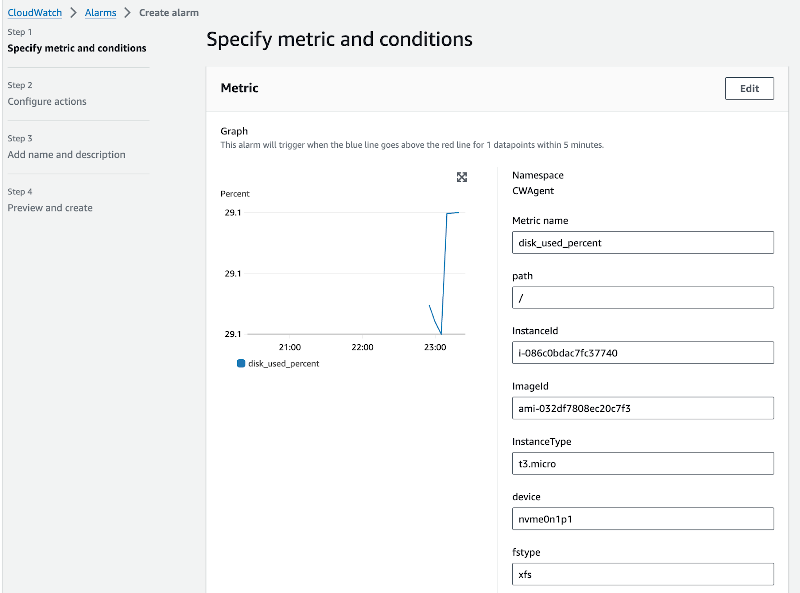
設定値
- Period： 15 minitues
- Whenever disk_used_percent is...： Greater/Equal
- than...： 90
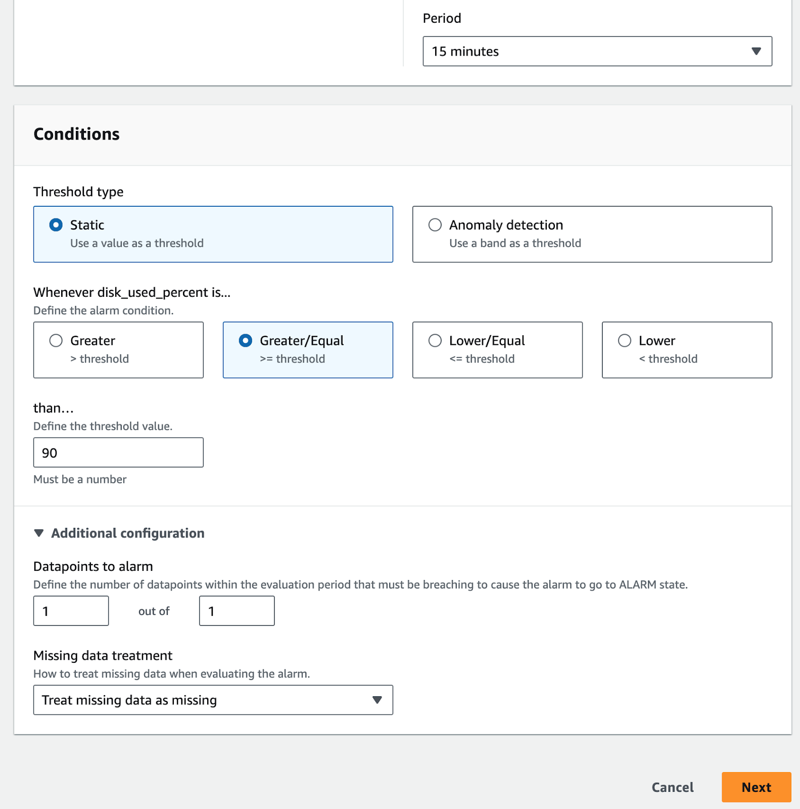
Next
設定値
- Send a notification to the following SNS topic： Create new topic
- Create a new topic...： monitoring-1-topic
- Email endpoints that will receive the notification... ： ${有効なメールアドレス}
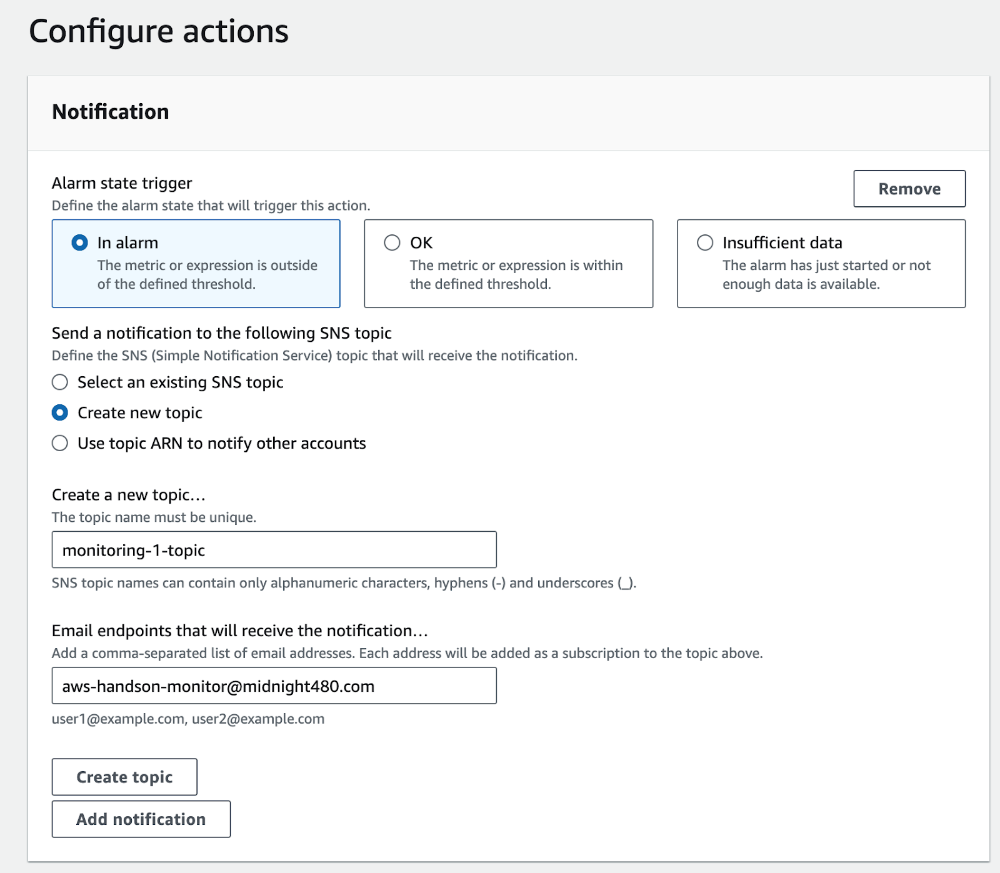
Next
設定値
- Alarm name： monitoring-1-alarm
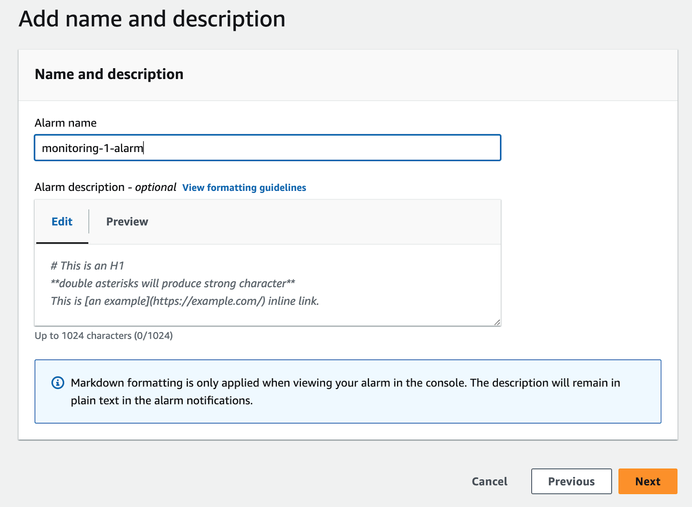
Next に進みます
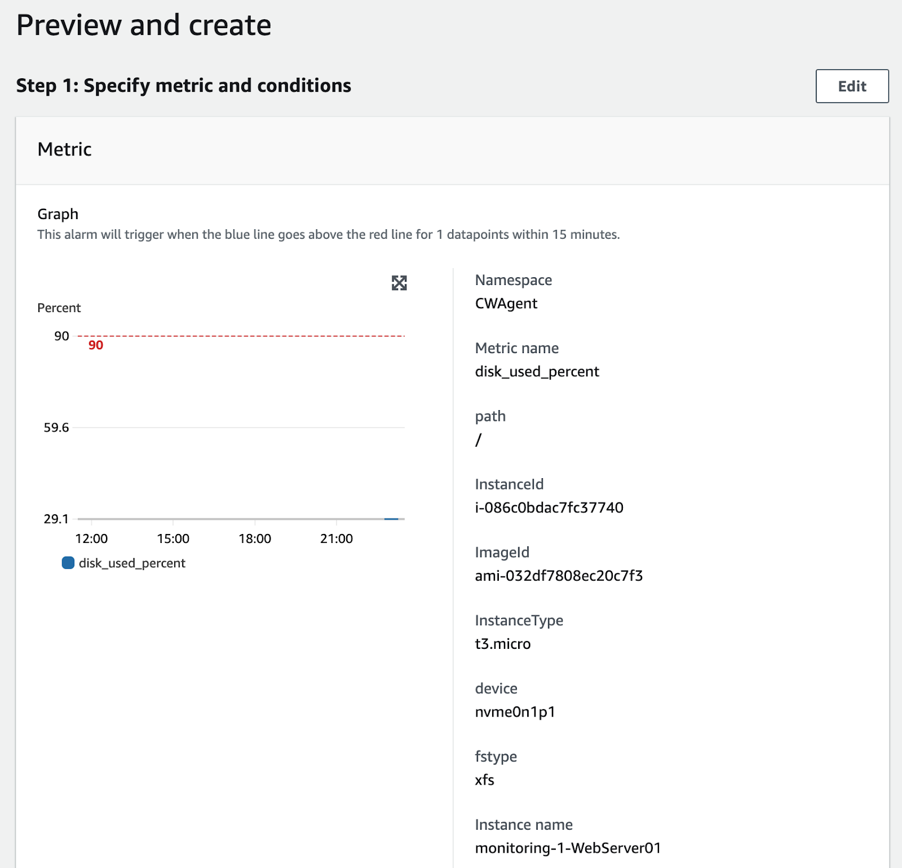
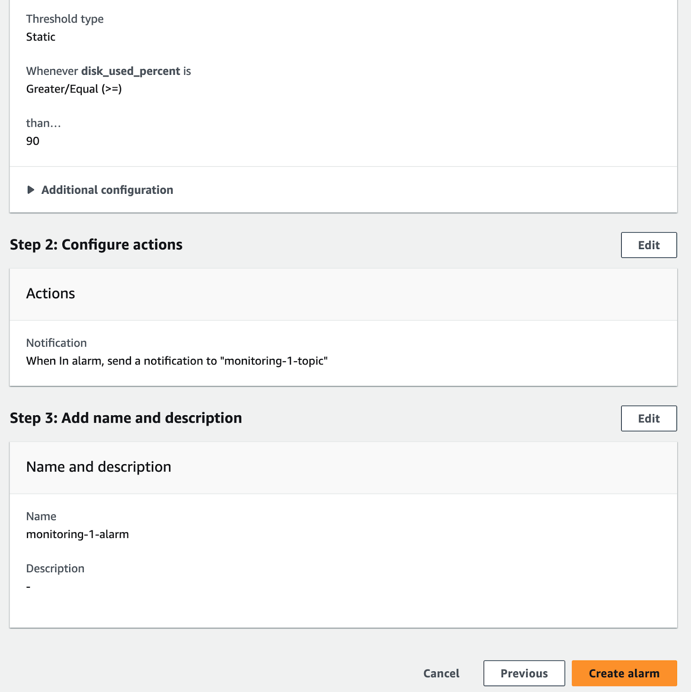

入力したメールアドレスに、SNSから確認メールが届いているので Confirm subscriptionしてください